| Date | 8 novembre 2026 |
| Dépôt | senevent |
| Branche du lab | feature/lab10-mobile-crud |
| Tag de sortie | v0.10-mobile-crud |
| Application | apps/mobile (Expo / React Native) |
Ce lab est le dernier volet mobile du projet SenEvent. L'application mobile savait naviguer et afficher les événements, mais elle était en lecture seule. Le Lab 10 lui ajoute les trois actions qui existaient déjà côté web :
Toute la logique métier passe par le package partagé @senevent/shared. Aucun appel
Supabase direct n'a été ajouté dans apps/mobile : le mobile ne réécrit pas la logique,
il construit une interface native au-dessus des mêmes fonctions que le web.
| Objectif | Mise en œuvre |
|---|---|
| Comprendre le Contexte React | context/AuthContext.js : createContext, AuthProvider, useAuth |
| Exposer la session à tous les écrans | AuthProvider enveloppe le Stack dans app/_layout.js |
| Construire un formulaire mobile | TextInput, KeyboardAvoidingView, secureTextEntry |
| Connexion / inscription mobile | seConnecter, sInscrire, seDeconnecter |
| Créer un événement | creerEvenement, écran app/nouveau.js, bouton headerRight |
| Rafraîchir la liste au retour | useFocusEffect + useCallback |
| S'inscrire à un événement | estInscrit, inscrire, desinscrire |
| Prouver l'architecture partagée | Démo croisée web/mobile sur la même base Supabase |
Le monorepo contient deux clients et une seule source de vérité métier.
apps/web (React) apps/mobile (Expo / React Native)
\ /
\ /
packages/shared → @senevent/shared
seConnecter / sInscrire / seDeconnecter
getEvenements / creerEvenement
inscrire / desinscrire / estInscrit / mesInscriptions
|
Supabase (PostgreSQL + Auth + RLS)
| Couche | Rôle | Fichiers principaux |
|---|---|---|
apps/web |
Client React complet depuis les Labs 5–6 | src/pages/*, src/components/* |
apps/mobile |
Client natif complété au Lab 10 | app/*, components/*, context/* |
packages/shared |
Logique métier et accès Supabase | src/auth.ts, src/evenements.ts, src/inscriptions.ts |
| Supabase | Base unique, Auth et politiques RLS | supabase/migrations/*.sql |
Conséquence : un événement créé sur le mobile est visible sur le web, et une inscription faite sur le mobile est visible sur le web. C'est la démonstration finale du monorepo.
La branche main locale était à jour avec origin/main (aucun commit d'écart). Le point de
départ est le Lab 9 terminé, avec la navigation par onglets et l'écran de détail.
cd C:/DAWM
git checkout main
git fetch origin
git log --oneline -5
git checkout -b feature/lab10-mobile-crud
Sortie de git log --oneline -5 avant le lab :
bc24efe bonus : navigation par code avec useRouter (bouton retour a la liste)
5956c79 ecran detail parametre + cartes cliquables (Link asChild)
625064e navigation par onglets : liste + profil (+ fix doublon react via overrides)
6b74050 installe expo-router : dependances, entry point, scheme
88a80db bonus : pull-to-refresh sur la liste des evenements
L'application a été lancée avec Expo. Pour pouvoir prendre les captures dans un navigateur,
le support web a été ajouté (react-native-web, react-dom, @expo/metro-runtime) :
cd apps/mobile
npx expo start --web --port 8081
Le rendu navigateur utilise exactement les mêmes composants React Native que le mobile
(View, Text, TextInput, Pressable, FlatList). Les captures sont prises en
390 × 844, soit un format téléphone.
Sur le web, la session était détenue par App.jsx puis passée en prop aux composants
(prop drilling). Avec Expo Router, les écrans sont rendus par le routeur : l'onglet Profil
et l'écran de détail n'ont pas de parent commun qui pourrait leur passer la session.
Le Contexte React résout ce problème : AuthProvider place la session dans une valeur
accessible à toute la sous-arborescence, et chaque écran la lit avec useAuth().
| Pièce | Rôle |
|---|---|
createContext |
Crée le contexte et sa valeur par défaut |
<Context.Provider> |
Fournit la valeur courante à toute la sous-arborescence |
useContext |
Lit la valeur depuis n'importe quel composant descendant |
useAuth() |
Hook pratique qui encapsule useContext |
apps/mobile/context/AuthContext.jsimport {
createContext, useContext, useState, useEffect,
} from "react";
import { getSupabase } from "@senevent/shared";
const AuthContext = createContext({ session: null, chargement: true });
export function AuthProvider({ children }) {
const [session, setSession] = useState(null);
const [chargement, setChargement] = useState(true);
useEffect(() => {
// Recuperer la session au demarrage
getSupabase().auth.getSession().then(({ data }) => {
setSession(data.session);
setChargement(false);
});
// Ecouter les changements (login, logout, refresh du token)
const { data: sub } = getSupabase().auth.onAuthStateChange(
(_event, nouvelleSession) => setSession(nouvelleSession)
);
return () => sub.subscription.unsubscribe();
}, []);
return (
<AuthContext.Provider value={{ session, chargement }}>
{children}
</AuthContext.Provider>
);
}
export function useAuth() {
return useContext(AuthContext);
}
La logique est identique à celle du Lab 5 (getSession + onAuthStateChange +
désabonnement), mais rangée dans un contexte au lieu d'être dans App.jsx.
apps/mobile/app/_layout.js initialise Supabase une seule fois puis enveloppe le Stack
dans AuthProvider. L'écran nouveau est déclaré ici ; il sera créé à l'étape 3.
import { Stack } from "expo-router";
import { SafeAreaProvider } from "react-native-safe-area-context";
import { initSupabase } from "@senevent/shared";
import { AuthProvider } from "../context/AuthContext";
initSupabase(
process.env.EXPO_PUBLIC_SUPABASE_URL,
process.env.EXPO_PUBLIC_SUPABASE_ANON_KEY
);
export default function RootLayout() {
return (
<SafeAreaProvider>
<AuthProvider>
<Stack
screenOptions={{
headerStyle: { backgroundColor: "#1a3a5c" },
headerTintColor: "#fff",
}}
>
<Stack.Screen name="(tabs)" options={{ headerShown: false }} />
<Stack.Screen name="evenement/[id]" options={{ title: "Detail" }} />
<Stack.Screen name="nouveau" options={{ title: "Nouvel evenement" }} />
</Stack>
</AuthProvider>
</SafeAreaProvider>
);
}
Vérification : après connexion, l'onglet Profil affiche l'email de la session sans
rechargement manuel. C'est la preuve que onAuthStateChange met bien à jour le contexte.
L'onglet Profil du Lab 9 était un simple texte d'attente. Il devient un écran à deux états :
export default function Profil() {
const { session, chargement } = useAuth();
if (chargement) {
return <ActivityIndicator size="large" color="#1a3a5c" style={styles.centre} />;
}
if (session) {
return ( /* email + mes inscriptions + deconnexion */ );
}
return <FormulaireAuth />;
}
const soumettre = async () => {
setErreur(null);
setEnCours(true);
try {
if (mode === "signup") {
const data = await sInscrire(email, motDePasse);
// Cree la ligne profiles attendue par la cle etrangere des evenements.
if (data.user && data.session) {
await creerProfil(data.user.id, email.split("@")[0]);
}
} else {
await seConnecter(email, motDePasse);
}
// La session se met a jour toute seule via onAuthStateChange
} catch (e) {
setErreur(e.message);
} finally {
setEnCours(false);
}
};
Le formulaire utilise les briques natives vues en cours :
| Élément | Rôle |
|---|---|
TextInput + value / onChangeText |
Champ contrôlé (équivalent de value / onChange du web) |
secureTextEntry |
Masque le mot de passe |
autoCapitalize="none", keyboardType="email-address" |
Adapte le clavier à l'email |
KeyboardAvoidingView |
Empêche le clavier de recouvrir le champ actif |
behavior={Platform.OS === "ios" ? "padding" : "height"} |
Comportement adapté à la plateforme |
Attention aux deux « inscriptions » :
sInscrirecrée un compte, alors queinscrireinscrit à un événement. Ce sont deux fonctions différentes du package partagé. L'écran Profil utilisesInscrire; l'écran de détail utiliseinscrire.
profilesLa table evenements possède une clé étrangère organisateur_id → profiles(id). Le code du
lab ne crée pas cette ligne lors d'une inscription mobile. Pour que la création d'événement
fonctionne pour un nouveau compte, une fonction partagée a été ajoutée :
// packages/shared/src/auth.ts
export async function creerProfil(id: string, nom: string) {
const { error } = await getSupabase()
.from("profiles")
.upsert({ id, nom }, { onConflict: "id", ignoreDuplicates: true });
if (error) throw error;
}
Elle est appelée depuis le mobile, mais elle reste dans @senevent/shared : le mobile
n'accède toujours pas directement à Supabase.
Capture 1 — Onglet Profil déconnecté : formulaire de connexion.
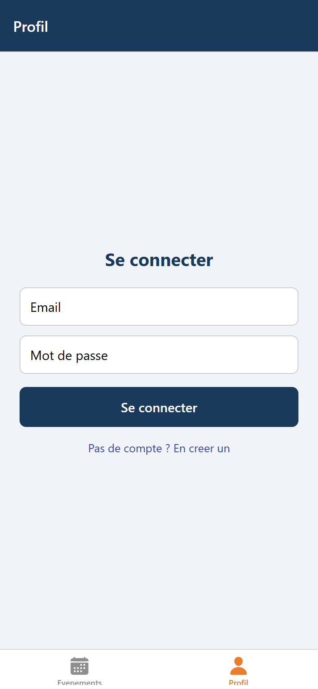
Capture 2 — Bascule vers la création de compte.
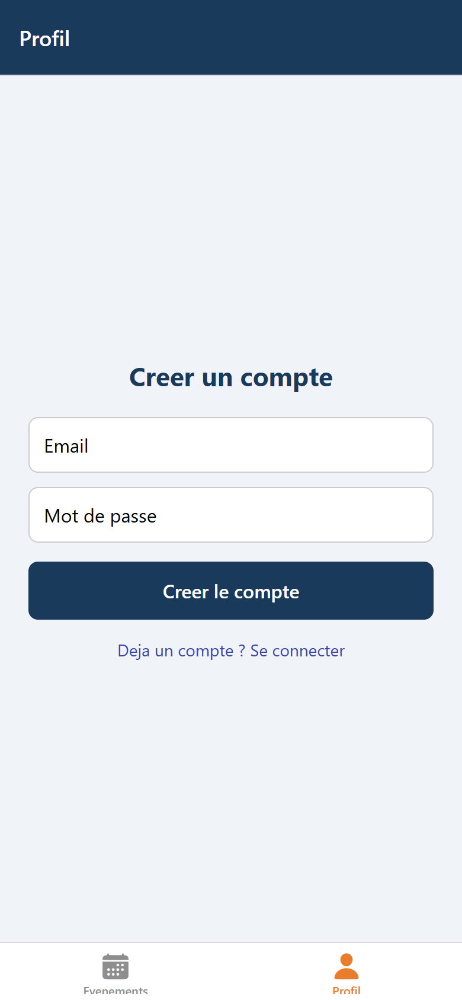
Capture 3 — Session active : email et bouton de déconnexion.
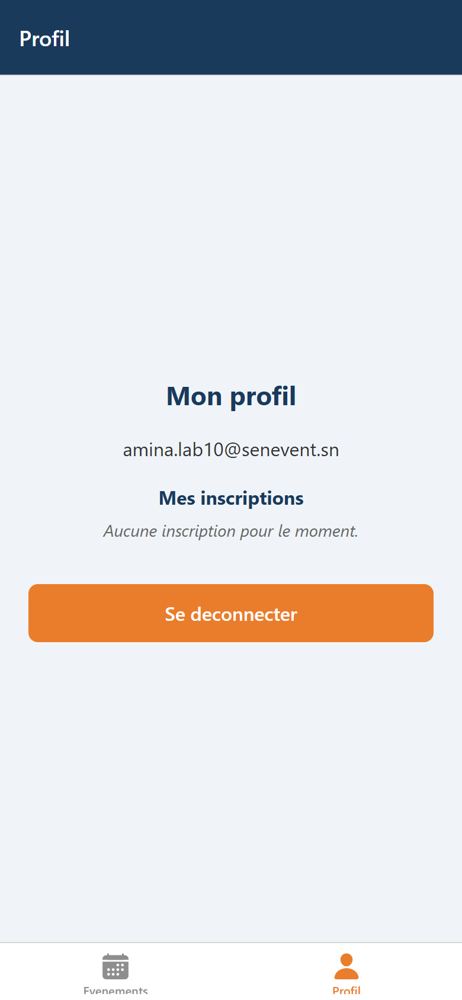
Le compte de démonstration créé depuis le mobile est amina.lab10@senevent.sn.
La session apparaît immédiatement après l'inscription, sans rechargement.
Le bouton n'est rendu que si session existe. Il utilise useRouter pour ouvrir /nouveau.
function BoutonAjouter() {
const { session } = useAuth();
const router = useRouter();
if (!session) return null;
return (
<Pressable
onPress={() => router.push("/nouveau")}
style={{ marginRight: 16 }}
>
<Ionicons name="add-circle" size={28} color="#fff" />
</Pressable>
);
}
Dans les options de l'onglet Événements :
<Tabs.Screen
name="index"
options={{
title: "Evenements",
headerRight: () => <BoutonAjouter />,
tabBarIcon: ({ color, size }) => (
<Ionicons name="calendar" size={size} color={color} />
),
}}
/>
Capture 4 — Le bouton « + » est visible dans l'en-tête lorsque l'utilisateur est connecté.
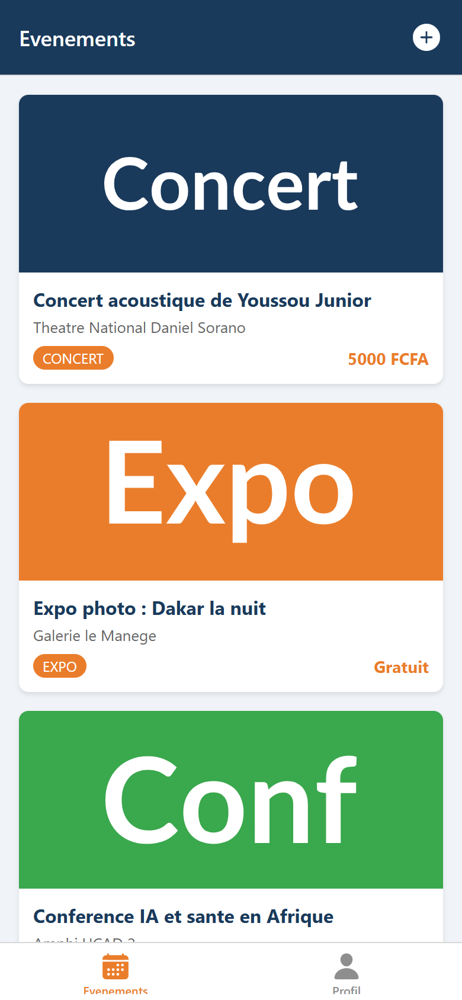
apps/mobile/app/nouveau.jsLe formulaire contient un titre, un sélecteur de catégorie en « chips », un lieu et un prix. La catégorie est choisie parmi les cinq valeurs autorisées par la contrainte SQL.
const CATEGORIES = ["concert", "expo", "conference", "atelier", "soutenance"];
const soumettre = async () => {
setErreur(null);
if (titre.trim().length < 3) {
setErreur("Le titre doit faire au moins 3 caracteres.");
return;
}
if (!session) {
setErreur("Vous devez etre connecte.");
return;
}
setEnCours(true);
try {
await creerEvenement({
titre: titre.trim(),
categorie,
lieu_nom: lieu.trim(),
date_debut: new Date().toISOString(),
prix: Number(prix) || 0,
organisateur_id: session.user.id,
});
router.back(); // retour a la liste
} catch (e) {
setErreur(e.message);
} finally {
setEnCours(false);
}
};
Le sélecteur de catégorie utilise des Pressable et un style conditionnel :
<Pressable
key={c}
style={[styles.chip, categorie === c && styles.chipActif]}
onPress={() => setCategorie(c)}
>
<Text style={categorie === c ? styles.chipTexteActif : styles.chipTexte}>
{c}
</Text>
</Pressable>
C'est l'équivalent React Native d'une classe CSS conditionnelle :
[style1, condition && style2].
Capture 5 — Écran de création vide.
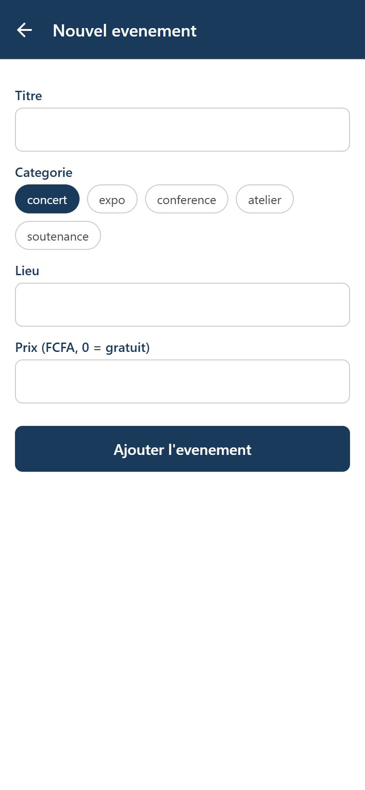
Capture 6 — Formulaire rempli, catégorie « concert » sélectionnée.
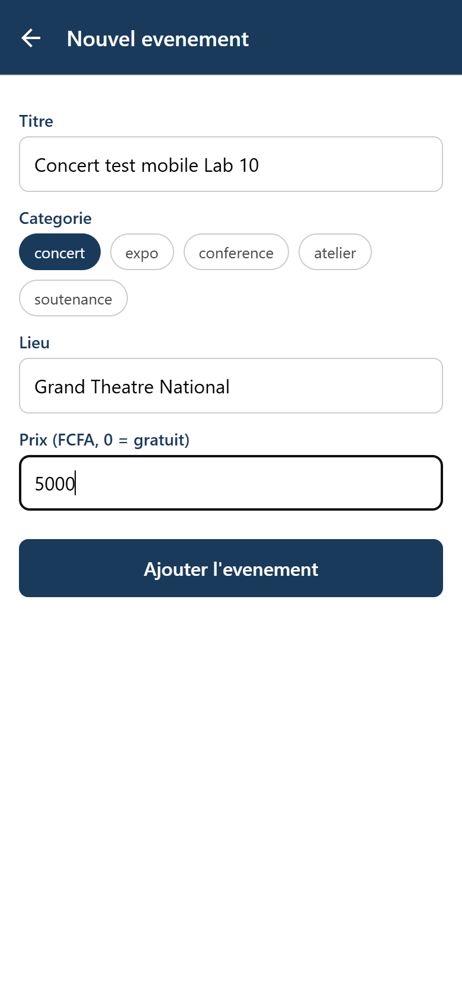
useFocusEffectuseEffect(fn, []) ne s'exécute qu'au montage. Sur mobile, un écran n'est pas démonté quand
on le quitte : il reste en mémoire. Au retour depuis l'écran de création, useEffect ne
relance donc pas le chargement. useFocusEffect exécute le code à chaque fois que l'écran
redevient visible.
import { useState, useCallback } from "react";
import { useFocusEffect } from "expo-router";
useFocusEffect(
useCallback(() => {
const charger = async () => {
try {
const data = await getEvenements();
setEvenements(data);
} catch (e) {
setErreur(e.message);
} finally {
setChargement(false);
}
};
charger();
}, [])
);
La fonction est enveloppée dans useCallback pour ne pas être recréée à chaque rendu.
Capture 7 — Retour à la liste : l'événement créé sur le mobile est présent.
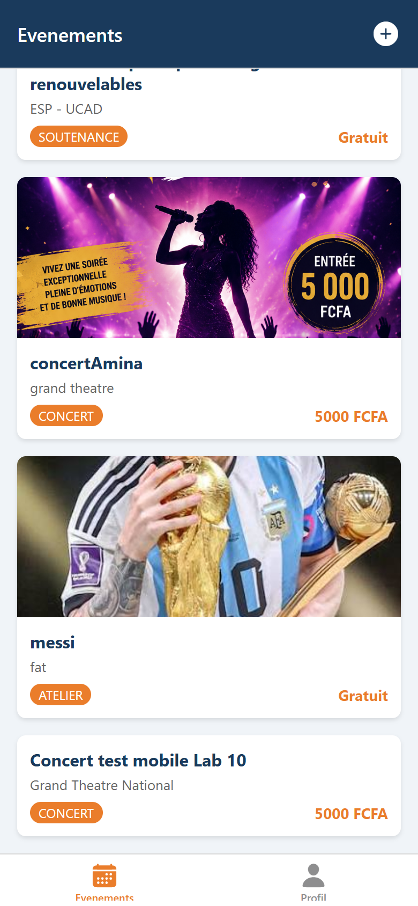
L'événement créé s'intitule « Concert test mobile Lab 10 », catégorie concert,
lieu « Grand Theatre National », prix 5 000 FCFA. Il est enregistré dans la table
evenements de Supabase et apparaît aussi côté web (voir §9).
BoutonInscriptionLe composant vérifie d'abord si l'utilisateur est déjà inscrit, puis bascule entre
inscrire et desinscrire. Sans session, il invite à se connecter.
export default function BoutonInscription({ evenementId }) {
const { session } = useAuth();
const [inscrit, setInscrit] = useState(false);
const [chargement, setChargement] = useState(true);
useEffect(() => {
const verifier = async () => {
if (!session) {
setChargement(false);
return;
}
const resultat = await estInscrit(evenementId, session.user.id);
setInscrit(resultat);
setChargement(false);
};
verifier();
}, [evenementId, session]);
if (!session) {
return (
<Text style={styles.info}>
Connectez-vous (onglet Profil) pour vous inscrire.
</Text>
);
}
if (chargement) {
return <ActivityIndicator color="#1a3a5c" style={styles.marge} />;
}
const basculer = async () => {
if (inscrit) {
await desinscrire(evenementId, session.user.id);
setInscrit(false);
} else {
await inscrire(evenementId, session.user.id);
setInscrit(true);
}
};
return (
<Pressable
style={[styles.bouton, inscrit ? styles.desinscrire : styles.inscrire]}
onPress={basculer}
>
<Text style={styles.texte}>
{inscrit ? "Se desinscrire" : "S'inscrire a cet evenement"}
</Text>
</Pressable>
);
}
import BoutonInscription from "../../components/BoutonInscription";
// ... apres le bloc Prix :
<BoutonInscription evenementId={evenement.id} />
Capture 8 — Détail de l'événement avant inscription.
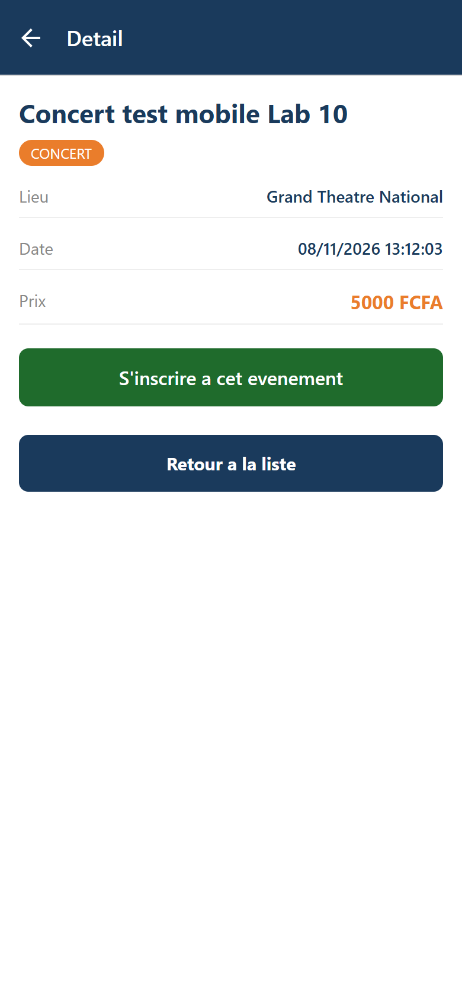
Capture 9 — Après l'inscription : le bouton devient « Se désinscrire ».
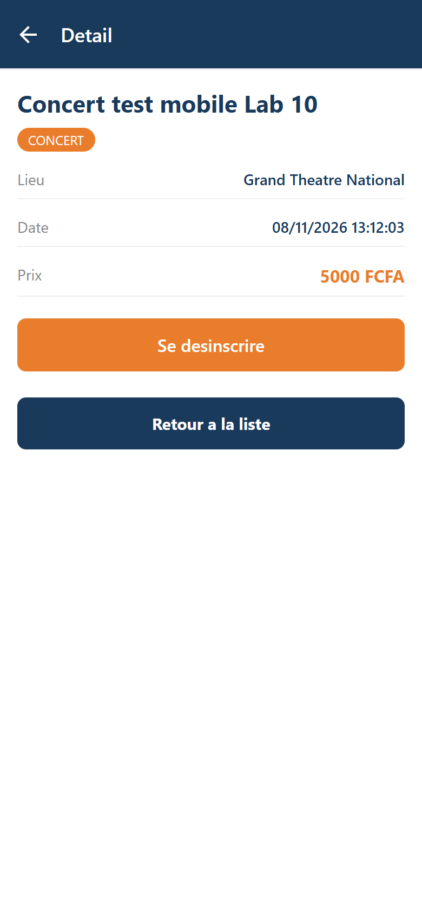
Côté base, une ligne a été insérée dans inscriptions :
[
{
"id": 21,
"evenement_id": 13,
"utilisateur_id": "3571e1ac-0536-4a49-a869-cc09efe054cd",
"created_at": "2026-11-08T13:12:06.415744+00:00"
}
]
Le bonus du lab consiste à afficher, dans le profil connecté, la liste des événements auxquels l'utilisateur s'est inscrit.
// packages/shared/src/inscriptions.ts
export async function mesInscriptions(utilisateurId: string): Promise<any[]> {
const { data, error } = await getSupabase()
.from("inscriptions")
.select("evenement_id, evenements(titre, date_debut)")
.eq("utilisateur_id", utilisateurId);
if (error) throw error;
return data ?? [];
}
La fonction est automatiquement disponible pour le web grâce au export * from
"./inscriptions" de index.ts. Une fonction, deux clients.
Le chargement est fait dans un useFocusEffect pour rafraîchir la liste quand on revient
sur l'onglet après une inscription :
useFocusEffect(
useCallback(() => {
if (!session) {
setInscriptions([]);
return;
}
mesInscriptions(session.user.id)
.then(setInscriptions)
.catch(() => setInscriptions([]));
}, [session])
);
Capture 10 — Le profil connecté affiche « Mes inscriptions » avec l'événement rejoint.
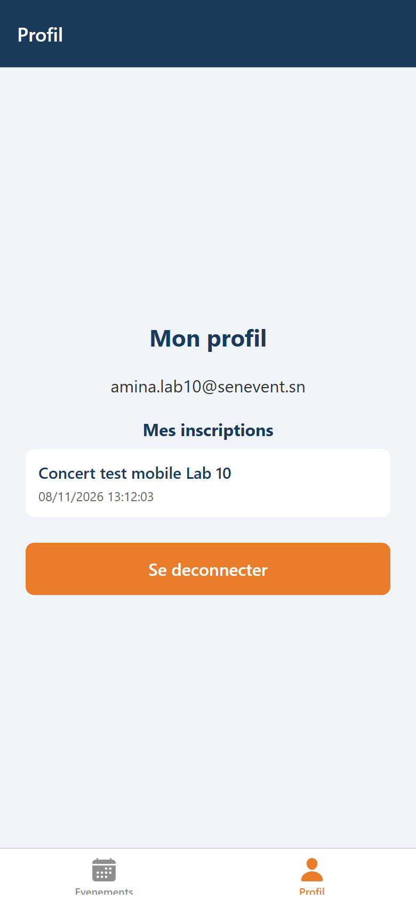
La capture suivante est produite à partir de l'API REST Supabase, avec la clé publique du
projet. Elle montre l'événement créé sur le mobile (id 13) et la ligne d'inscription
correspondante (id 21), dans les tables evenements et inscriptions.
Capture 11 — Événement et inscription lus dans la même base Supabase.
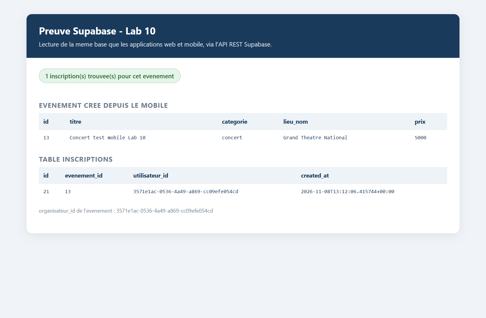
L'application web a été lancée sur http://127.0.0.1:5173 et lit la même base. Sans même
se reconnecter, la liste web affiche l'événement « Concert test mobile Lab 10 » créé
depuis le mobile.
Capture 12 — L'application web affiche l'événement créé sur le mobile.
Après connexion sur le web avec le même compte (amina.lab10@senevent.sn), la page de
détail affiche « Se désinscrire » : l'inscription faite sur le mobile est bien visible
côté web.
Capture 13 — L'inscription faite sur le mobile est visible sur le web.
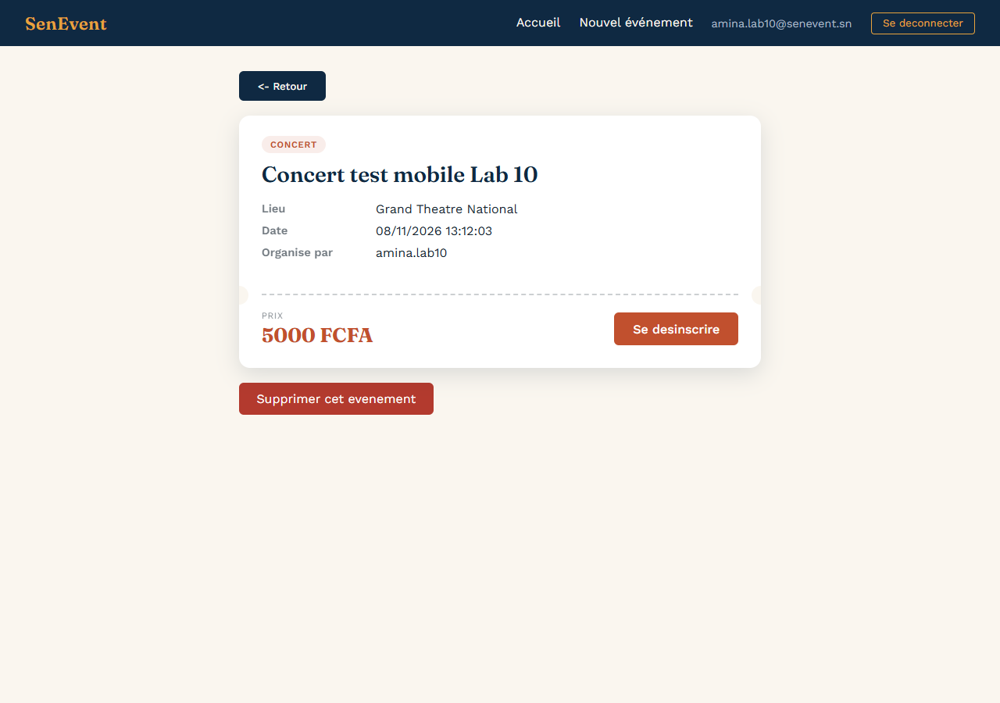
Aucun appel Supabase direct n'a été ajouté dans apps/mobile :
$ grep -rc "supabase\.from\|createClient" apps/mobile
0
Tous les appels passent par @senevent/shared :
$ grep -rl "creerEvenement\|inscrire\|seConnecter" apps/mobile
apps/mobile/app/(tabs)/profil.js
apps/mobile/app/nouveau.js
apps/mobile/components/BoutonInscription.js
C'est exactement la promesse du monorepo : le mobile n'a réécrit aucune logique métier, il a importé les mêmes fonctions et construit une interface native par-dessus.
| Point de la checklist | État |
|---|---|
context/AuthContext.js expose AuthProvider et useAuth |
✓ |
app/_layout.js enveloppe le Stack dans AuthProvider |
✓ |
| L'onglet Profil montre le formulaire (déconnecté) ou l'email + déconnexion (connecté) | ✓ |
Le formulaire utilise TextInput et KeyboardAvoidingView |
✓ |
La connexion / inscription passe par seConnecter / sInscrire |
✓ |
| Un bouton « + » apparaît dans l'en-tête, seulement si connecté | ✓ |
L'écran nouveau.js crée un événement via creerEvenement |
✓ |
La liste se rafraîchit au retour grâce à useFocusEffect |
✓ |
L'écran de détail a un BoutonInscription (inscrire / desinscrire) |
✓ |
Aucun appel Supabase direct dans apps/mobile |
✓ (0) |
| Au moins trois commits dans l'historique du lab | ✓ (5 commits Lab 10) |
Le tag v0.10-mobile-crud est posé sur main |
✓ |
Commandes de vérification côté enseignant :
$ git shortlog -sne v0.9-router..v0.10-mobile-crud
6 Aminata Diouf <aminata21diouf@gmail.com>
$ git log v0.9-router..v0.10-mobile-crud --oneline
c0f07bb bouton d'inscription a un evenement sur mobile
c261742 creation d'evenement mobile + bouton header + refresh au focus
515b6d1 ecran Profil : connexion, inscription, deconnexion mobile (+ bonus mes inscriptions)
63378fc contexte d'authentification (AuthProvider + useAuth)
9222d6c chore: ajoute le support web pour tester l'app dans le navigateur
bc24efe bonus : navigation par code avec useRouter (bouton retour a la liste)
$ test -f apps/mobile/context/AuthContext.js && echo OK || echo MANQUE
OK
L'intervalle v0.9-router..v0.10-mobile-crud contient 6 commits : les 5 commits du Lab 10,
plus bc24efe (bonus de navigation du Lab 9, posé après le tag v0.9-router).
| Commit | Message |
|---|---|
9222d6c |
chore: ajoute le support web pour tester l'app dans le navigateur |
63378fc |
contexte d'authentification (AuthProvider + useAuth) |
515b6d1 |
ecran Profil : connexion, inscription, deconnexion mobile (+ bonus mes inscriptions) |
c261742 |
creation d'evenement mobile + bouton header + refresh au focus |
c0f07bb |
bouton d'inscription a un evenement sur mobile |
e334088 |
Merge Lab 10 : auth et CRUD complet mobile |
git checkout main
git merge --no-ff feature/lab10-mobile-crud
git tag -a v0.10-mobile-crud -m "Lab 10 termine : auth et CRUD complet mobile"
Le tag v0.10-mobile-crud est posé sur main au commit de merge e334088.
git push origin main
git push origin v0.10-mobile-crud
Le Lab 10 complète la partie mobile du projet SenEvent. L'application sait désormais :
Toutes ces actions passent par @senevent/shared, sans aucun appel Supabase direct dans
apps/mobile. La démonstration croisée le confirme : un événement créé sur le mobile est
visible sur le web, et une inscription faite sur le mobile est visible sur le web. Les deux
clients font la même chose, sur la même base, avec une seule logique métier.
Tag posé : v0.10-mobile-crud.
apps/mobileapps/mobile/
├── app/
│ ├── _layout.js # Stack + AuthProvider + initSupabase
│ ├── nouveau.js # ecran de creation d'evenement
│ ├── (tabs)/
│ │ ├── _layout.js # Tabs + bouton "+" (headerRight)
│ │ ├── index.js # liste (useFocusEffect)
│ │ └── profil.js # connexion / inscription / deconnexion + bonus
│ └── evenement/
│ └── [id].js # detail + BoutonInscription
├── components/
│ ├── EvenementCarte.js # carte cliquable
│ └── BoutonInscription.js # inscription a un evenement
├── context/
│ └── AuthContext.js # AuthProvider + useAuth
├── metro.config.js
├── app.json
└── package.json
# Mobile (Expo Go ou navigateur)
cd apps/mobile
npx expo start
# ou, pour le rendu navigateur :
npx expo start --web --port 8081
# Web (Vite)
cd apps/web
npm run dev
| Champ | Valeur |
|---|---|
amina.lab10@senevent.sn |
|
| Mot de passe | Lab10Senevent! |
| Événement créé | « Concert test mobile Lab 10 » (id 13) |
| Inscription | id 21, sur l'événement 13 |
react-native-web, react-dom, @expo/metro-runtime) a été ajouté
uniquement pour exécuter l'application dans un navigateur et produire les captures. Le
code applicatif reste du React Native standard.creerProfil a été ajoutée au package partagé pour créer la ligne profiles
attendue par la clé étrangère evenements.organisateur_id. Sans elle, un compte créé
depuis le mobile ne pourrait pas créer d'événement.profil.js avec mesInscriptions,
ajouté au package partagé et donc également disponible pour le web.